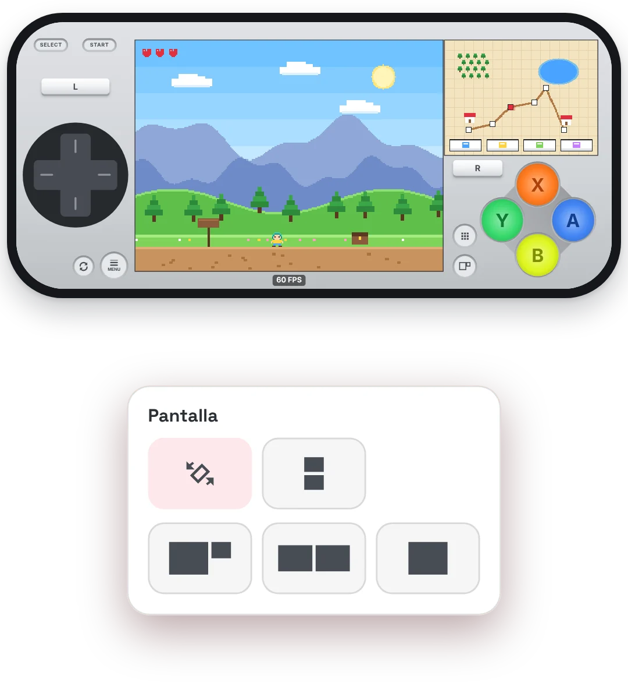
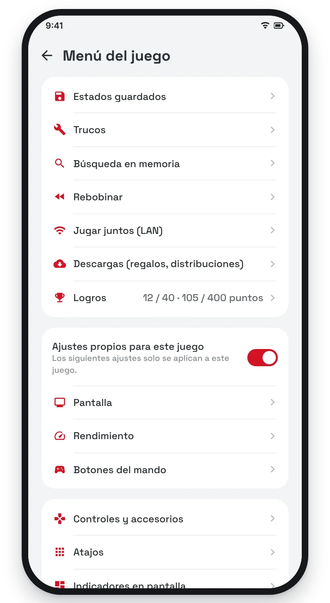
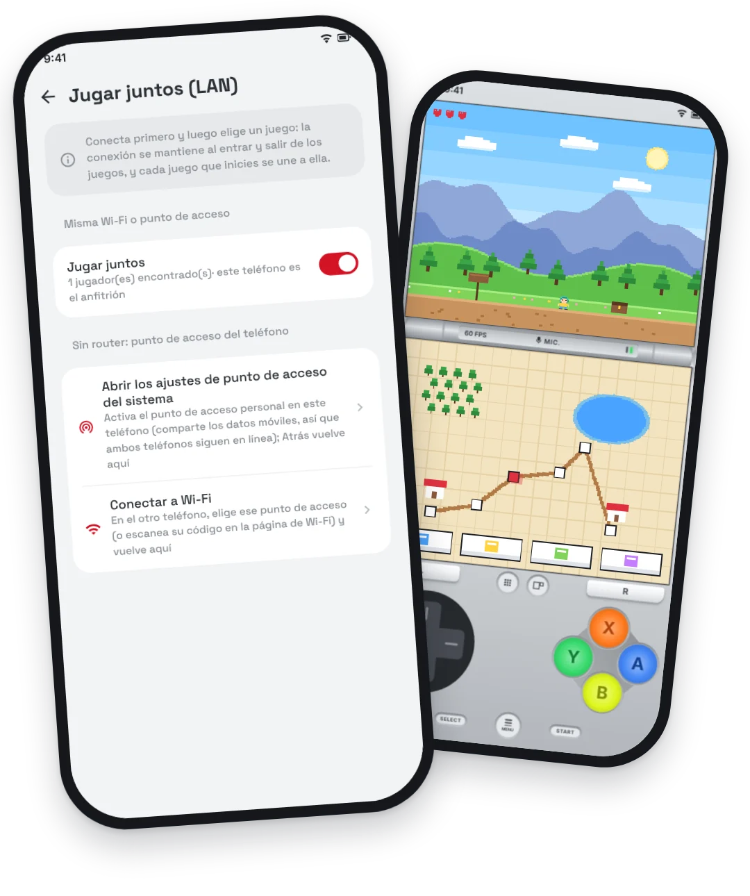
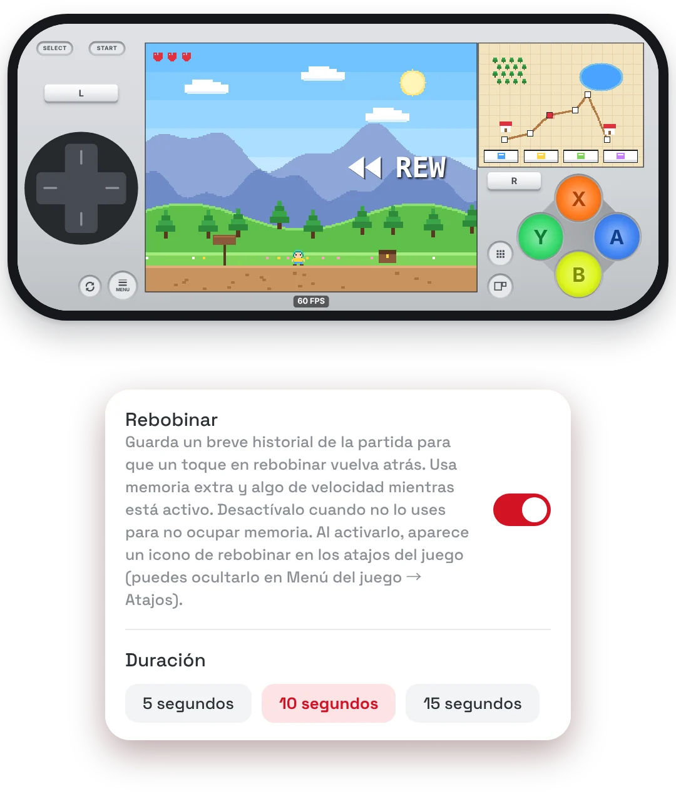

Emulador de NDS de núcleo propio y alta precisión: 3D en HD, juego local, trucos

Iconos y títulos leídos de cada juego. Sigue donde lo dejaste.

CarloDS es un emulador de NDS para teléfonos y tabletas Android. Su núcleo de emulación –procesadores ARM9 y ARM7, gráficos 2D y 3D, audio, conexión inalámbrica y BIOS integrada– es de desarrollo propio y está calibrado con pruebas en la consola original. La mayoría de los juegos funcionan sin archivos de BIOS; se admite el formato ZIP.
Apiladas, grande + pequeña, lado a lado o una pantalla.

Gama baja, media o alta con un toque. 3D hasta 4×.

Estados, trucos, rebobinar, juego inalámbrico, descargas, logros.

¿Sin router? Un punto de acceso del móvil también sirve.

Busca valores en una ventana flotante mientras juegas.

Un toque vuelve 5, 10 o 15 segundos atrás.
